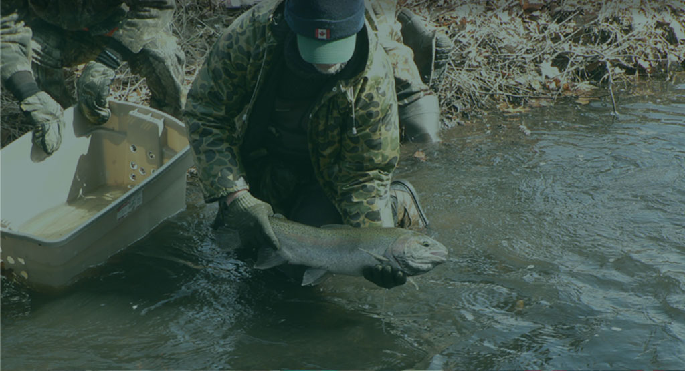
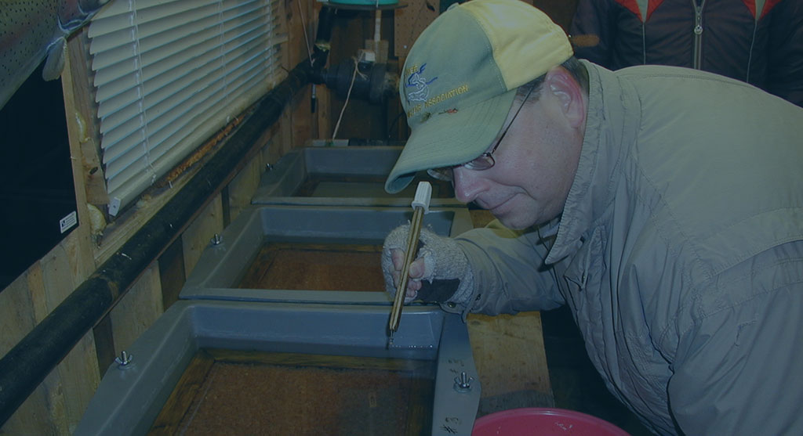
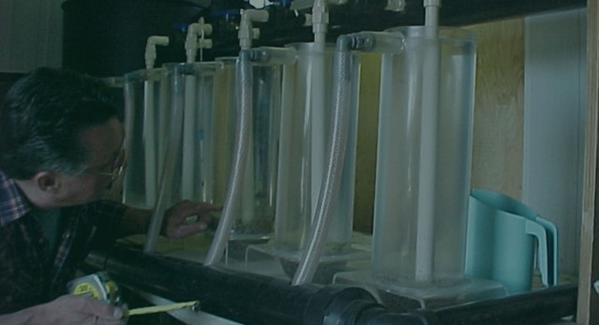
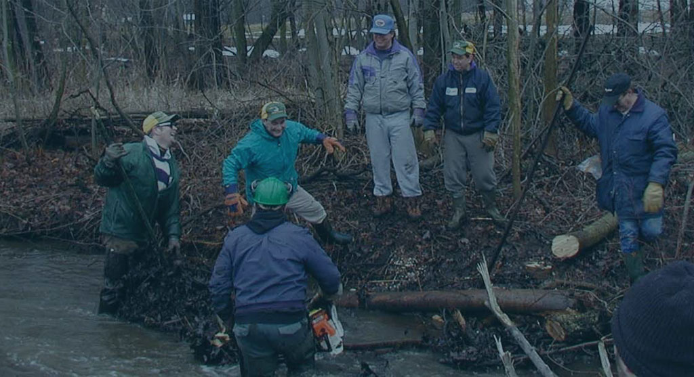
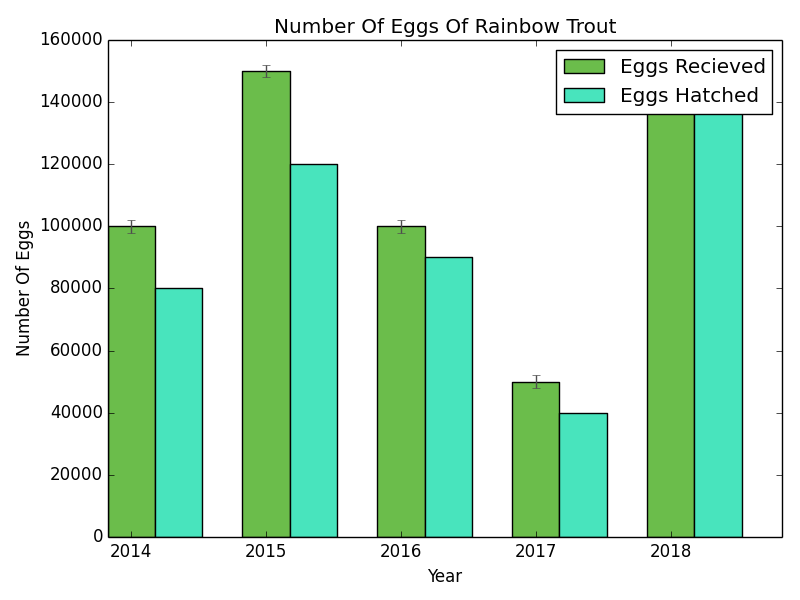
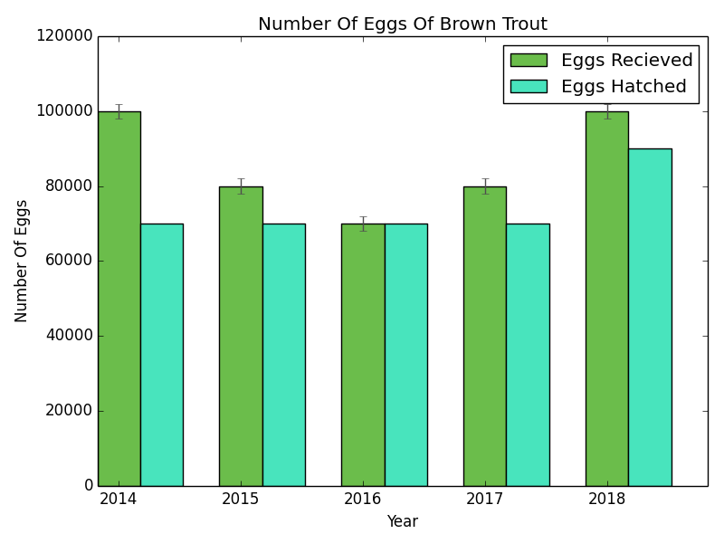
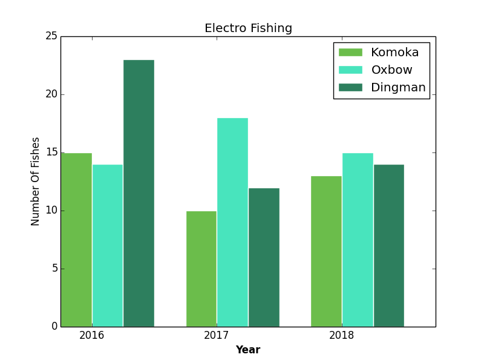

Header
Projects
"Hands-on Environmentalism"
is what we do ...
This is what sets the TRAA apart from other clubs and organizations. You'll find us right in the water clearing obstructions from streams, measuring returning salmonids & taking scale samples for DNA analysis, education through trout hatchery tours & stream walks, being a voice for the Thames River watershed & its inhabitants and the list goes on.

Salmonid Monitoring Program
Here's an overview of what happened over a few weekends in the
Spring of 2012 when TRAA members and personnel from the Upper
Thames River Conservation Authority (UTRCA) waded in for Year 3
of our 5-year Salmonid Tagging and Monitoring Program.
Jon George, an MNR biologist from Thunder Bay
who is helping us out with this project, compiled
the comparative results of 2010 (Year 1) and
2011 (Year 2) and 2012 (Year 3) in an easy-to-understand report.
Click Here to have a look; it's quite interesting.

TRAA Trout Hatchery
The TRAA Trout Hatchery began in the mid-1980's as an outdoor upwelling box located adjacent to Komoka Creek on private property. While it was a simple and rustic affair, the TRAA enjoyed incredible egg hatching and fry survivability rates for several seasons.
The picture on the left shows the front of the upwelling box with the individual outlets for each segregated cell emptying into a trough running along the front of the box. The shot on the right shows the back of the upwelling box with the spring source supply pipe feeding each separate valve for every cell. The stainless steel tank in the background was re-purposed from a milking operation into a fry holding tank.The box on the top of the tank housed the automatic feeder.
While this setup served us well it was also very challenging to maintain. We had to pack the upwelling box with straw bales (see picture above right) to keep the water in the cells from freezing. Members of the Trout Hatchery Rotation had to huddle over each cell picking eggs in wind-driven rain, sleet and snow. Something had to be done so a new setup was housed in a new enclosure.

Walleye Hatchery
The TRAA and the Upper Thames River Conservation Authority (UTRCA), with the blessing of the Ministry of Natural Resources (MNR), agreed to the operation of a walleye hatchery in Fanshawe Conservation Area, just north-east of London, Ontario.
While this was a relatively short-lived initiative, it was very popular with members and the community at large. Many would conclude it was also very successful considering the exciting fishery that developed closely thereafter.
The Lake Erie Management Unit (LEMU) forced the TRAA to shut down the walleye hatchery after only three seasons of operation. The LEMU's decision was dubiously based on an American study, that the Thames River walleye were genetically unique from the Grand River walleye (the TRAA's source for eggs).
Interestingly, walleye (from egg through adult stages) continue to be transferred throughout Ontario waterways and water bodies seemingly without regard for genetic purity.

TRAA Stream Rehabilitation
The TRAA trout hatchery is fun and educational but the TRAA is not about stocking fish for a "put & take" style of fishery.
We understand the connection between a healthy aquatic ecosystem and the sustainability of a naturally reproducing fish population, regardless of the species.
The work parties and the work involved at each event vary greatly. Some are very technical, some are just hard slugging and others are a good blend of both.
There are lots of different jobs at each event requiring an array of strengths and capabilities. In other words, everyone is welcome to join in on the fun; whether your young or old, a lightweight or a bull, everyone has a place and a job at a TRAA stream rehabilitation work party!
The following are some pages illustrating some of our past stream rehabilitation work parties:
Feb 2012 - Selective removal of deadfalls, blowdowns and other in-stream debris
Sep/Oct 2011 - Building in-stream current deflectors
TRAA Data


